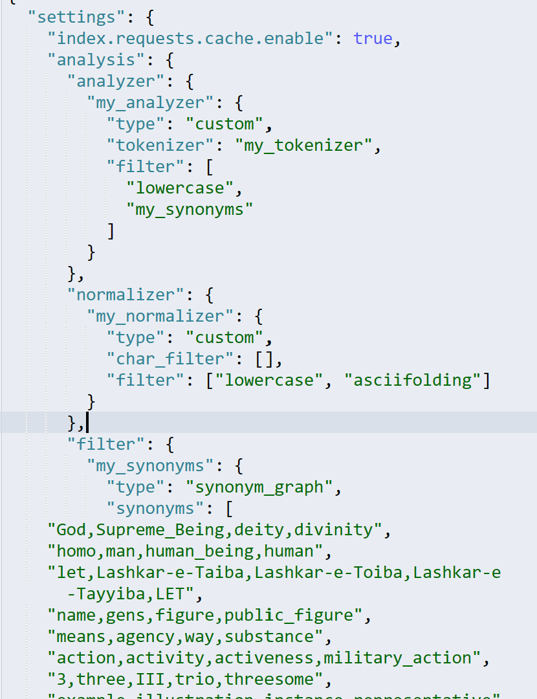

检索¶
技术选型¶
- 后端部分 Django
- 搜索逻辑 ElasticSearch
核心功能¶
基本搜索功能¶
完全匹配搜索¶
-
可以针对
title/uploader进行搜索，将用户输入作为keyword，在 ElasticSearch 数据库中寻找所有满足title/uploader == keyword的 Gif，将id整合成数组，据此进行分页和从 Postgres 中取图实现上，在 ElasticSearch 数据库创建索引时，
title/uploader字段具有复合类型，此处使用 ElasticSearchterm查询字段title.keyword/uploader.keyword，将该字段认为为关键字，不会对该字段分词，匹配条件为严格相等 -
基本搜索功能和条件筛选解耦，两者可以任意组合使用，以达到更快、更精确的搜索效果
-
搜索结果按关联度降序排序，见 搜索结果排序合理
部分匹配搜索¶
-
可以针对
title/uploader进行搜索，对用户输入进行分词获得tokens1，在 ElasticSearch 数据库中寻找所有这样的 Gif，满足title/uploader字段同样进行分词后获得的tokens2完全包含tokens1，将id整合成数组，据此进行分页和取图实现上，在 ElasticSearch 数据库创建索引时，
title/uploader字段具有复合类型，此处使用 ElasticSearchmatch查询字段title/uploader，将该字段认为为普通文本，对该字段分词，match本身会对用户输入分词，也即 用户输入和目标均会被分词，根据分词结果判断匹配 -
我们的项目图库中绝大多数为英文 Gif，为增加对英文分词的精确度，使用
standard分词器，对中文而言效果不是特别理想，但得益于中文单字不俗的表意性，也能满足搜索需求，对于类似英文的欧洲语系，支持效果同样很好 -
基本搜索功能和条件筛选解耦，两者可以任意组合使用，以达到更快、更精确的搜索效果
-
搜索结果按关联度降序排序，见 搜索结果排序合理
正则表达式搜索¶
- 可以针对
title/uploader进行搜索。用户输入一个正则表达式，在 Django 后端直接使用数据库的正则表达式查询来实现，不经过 ElasticSearch 搜索模块。 - 正则表达式采用 python 正则表达式语法。
关联搜索¶
-
可以针对
title/uploader进行搜索，对用户输入keyword进行语义上的关联，仅在这一搜索模式下启用该功能，在 ElasticSearch 数据库中寻找所有满足
title/uploader "=" keyword的 Gif，等号代表相关，将 id 整合成数组，据此进行分页和取图实现上，在 ElasticSearch 数据库创建索引时，内置了一张近义词表，并自定义了一个分析器，在上传数据到 ElasticSearch 时会根据这些进行分组，每一组内的词是等价可替换的，然后使用 ElasticSearch
match查询，对每一个等价类进行部分匹配搜索，可以将数据库中所有和用户输入语义上等价的结果搜索出来
-
基本搜索功能和条件筛选解耦，两者可以任意组合使用，以达到更快、更精确的搜索效果
-
由于近义词的组合可能性非常多，查表也带来额外的时间开销，该搜索耗时相对较长
-
搜索结果按关联度降序排序，见 搜索结果排序合理
条件筛选¶
分类筛选¶
- 与完全匹配搜索一样，将
category作为关键字段，不可分词，用户输入keyword在前端通过下拉菜单选定，搜索出category == keyword的图片 - 分类筛选情况参与关联度评分
图片标签筛选¶
- 支持用户输入多个
tags，筛选出的目标图片至少应该包含用户输入的所有标签 - 分类筛选情况参与关联度评分
图片尺寸、时长筛选¶
- 支持根据设置最大值
max，最小值min，查询所有min <= length/height/duration <= max的结果，实现上使用 ElasticSearchrange字段过滤出所有符合限制条件的图片 - 尺寸类型设置为
long时长类型设置为float - 尺寸/时长的筛选情况不参与关联度评分
搜索结果合理排序¶
-
最终选择根据相关性降序排序，用户最先看到和自己输入最相关的 Gif ，能够获得更好的体验，实现上使用 ElasticSearch 支持的评分公式，可参考Okapi_BM25，根据测试效果给分已经足够合理，因此没有重写该公式
严格判等的查询如完全匹配，只要匹配上结果就同分；含有匹配、分词的查询，根据匹配程度评分；尺寸时长的筛选不参与评分
-
对于正则表达式查询，认为不同的条目只有匹配与不匹配该正则表达式之分，对于匹配的项目没有匹配度/关联度高低之分。因而正则表达式对搜索结果不进行“关联度”排序，返回的结果将按图片在数据库中的
id排序。 - 根据时间热度等其他排序方式，在热搜词等功能有一定程度涉及，因此不单独实现，默认针对关联性排序
搜索结果显示¶
- 分页显示：在完成以上搜索之后，将排序后的结果分页，只返回指定的页面的结果。
- 搜索计时：搜索接口还返回搜索部分的用时和整个搜索 API 的用时。
搜索缓存¶
-
将最近搜索的结果缓存在 Django 后端，避免对连续重复请求进行重复搜索，提高搜索效率
-
Django 后端维护一个搜索缓存映射表，每一项的键是搜索请求体，值是该搜索的时间戳和对应的结果列表。对于每次搜索请求，先检查该请求中是否在缓存表中出现，且时间戳未过期，并直接返回结果；否则进行搜索并在缓存表中添加或更新搜索记录
用户搜索历史¶
- 网页前端使用本地存储记录用户搜索历史，每次搜索时将用户输入存入本地，下次打开网页时读取本地存储，将用户搜索历史显示在搜索框下方，用户可以点击历史记录进行搜索
智能推荐¶
用户输入预测¶
-
根据用户已有的输入，预测用户的搜索目标，每当用户输入变化都需要使用该功能，因此需要较高性能，预测时总是先假设用户当前输入无误，因此给出的建议前缀与用户输入相同
实现上使用 ElasticSearch
completion查询完成，数据库中内置一个suggest字段其内容与title相同，但使用了不同的类型，设用户输入为keyword，该查询会根据数据库中的内容，返回所有prefix(suggest) = keyword的suggest字段作为用户输入预测，得益于completion查询的实现方式，用户输入预测能很快完成，满足性能要求 -
支持对
title进行预测，由于用户数目较少，能给出了建议有限，因此在uploader的查询时取消了预测，只给出纠错，有利于提高性能
用户输入纠错¶
-
如果用户输入了错误的前缀，很有可能无法根据图库信息给出建议，此时认为用户输入有误，给出纠错，即优先级 用户输入预测 > 用户输入纠错
实现上使用 ElasticSearch
correct查询完成，同时会对纠错效果进行评价，只会返回纠错效果不低于自身的结果，而不至于给出很多无意义的纠错 -
支持对
title/uploader进行纠错 - 语法纠错，简单的拼写校正
- 内容纠错，能根据数据库已有图片的信息，给出内容上的纠错，图库越大纠错效果越明显
搜索高频词¶
- 基于网站搜索历史给出搜索高频词（句），不同于用户搜索历史 基于个人的历史，搜索高频词根据 所有用户的输入 给出，实现上在 ElasticSearch 数据库中新建了
message条目, 通过 ElasticSearchaggs聚合查询，统计每个输入的出现次数，给出高频结果 - 用户输入被作为一个整体，不进行分词，正如微博热搜给出的是热搜句，而非热搜字，具有完整信息的高频次推荐更有意义
用户画像¶
-
基于用户的搜索偏好，个性化推荐用户可能想看的 Gif ，在网站首页进行展示
后端通过追踪记录用户的搜索、浏览习惯，提取出不同
tag的频率词典，例如{ food: 213, animal: 90, Trump: 12 }利用这些数据生成权重
boost，再利用 ElasticSearchterms查询搜索包含这些 tag 的结果，思路同 基本搜索功能，由于权重的设置，用户浏览越多的一类 Gif 其在搜索结果中的排序也越靠前，如果限定搜索返回结果的最大数目，这类 Gif 也会是其中占比最高的，从而实现个性化推荐功能